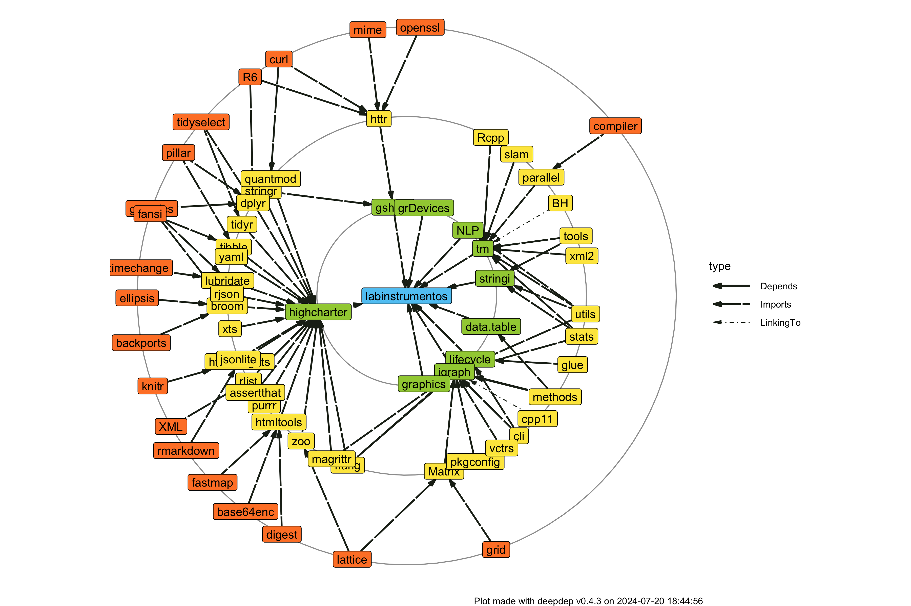

Este es un paquete de que contiene los datos procesados del laboratorio de intrumentos, así como herramientas complementarias para su análisis y visualización.
Sobre
R es un lenguaje de programación estadística de alto nivel usado para el análisis de datos, así como para el desarrollo de herramientas informáticas como sitios web, reportes, aplicaciones, libros digitales, etc. Para más información puedes visitar el sitio de R-project.
Instalación
Para instalar el paquete directamente a tu computadora, asegurate de tener instalado R, luego escribe en tu consola de R lo siguiente:
# install.packages("devtools")
devtools::install_github("SEREMICTCI/labinstrumentos")Dependencias
Este paquete, así como sus correspondientes análisis, dependen de los siguientes paquetes.

Reconocimiento
Para citar este paquete en publicaciones puedes correr la siguiente función en tu consola de R.
citation("labinstrumentos")Lo que te dará el siguiente resultado.
To cite package 'labinstrumentos' in publications use:
Matías Castillo Aguilar and Carlos Morales Quiroz (2021).
labinstrumentos: Datos del Laboratorio de Instrumentos. R package
version 0.0.0.9011. https://github.com/SEREMICTCI/labinstrumentos
A BibTeX entry for LaTeX users is
@Manual{,
title = {labinstrumentos: Datos del Laboratorio de Instrumentos},
author = {Matías {Castillo Aguilar} and Carlos {Morales Quiroz}},
year = {2021},
note = {R package version 0.0.0.9011},
url = {https://github.com/SEREMICTCI/labinstrumentos},
}